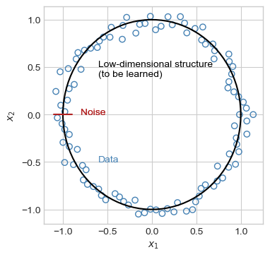
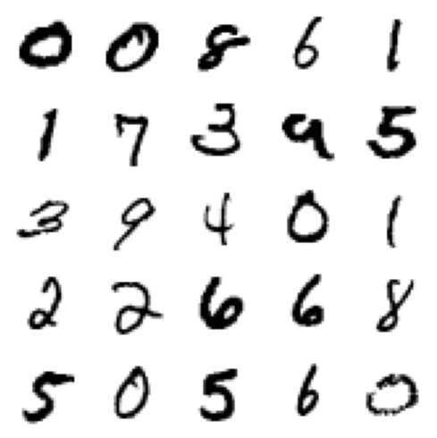
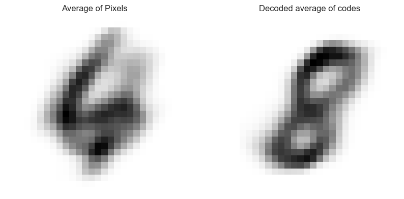
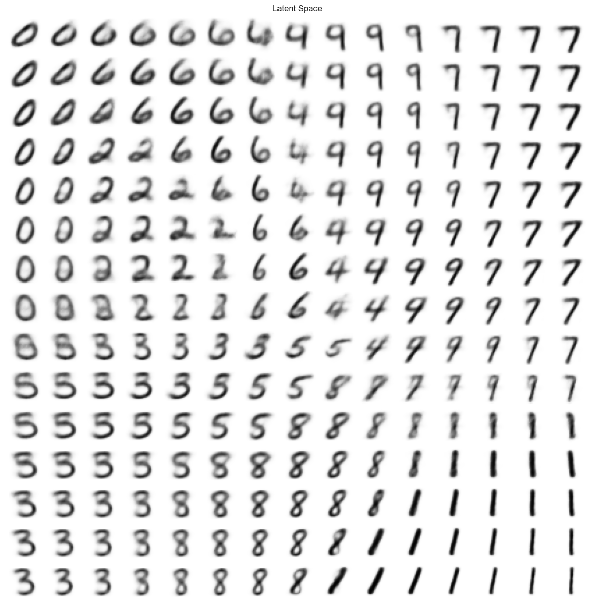

Last time, we studied unsupervised learning through the framework of autoencoders. When using autoencoders, the learning problem is to find an encoder\(\phi_e\) and a decoder\(\psi_d\) such that a reconstructed data point \(\hat{\mathbf{x}} = \psi_d(\phi_e(\mathbf{x}))\) is “close” to the original data point \(\mathbf{x}\), where “close” needs to be measured in terms of a loss function. We looked at two examples of autoencoders defined in terms of the square-error loss function: k-means and principal component analysis (PCA).
PCA in particular is an example of an encoding algorithm for dimensionality reduction. The aim of dimensionality reduction is to learn a lower-dimensional representation of the data set in a new feature space that captures its fundamental structure. PCA is the most common form of linear dimensionality reduction, in which we aim to learn linear structure that summarizes the data. In these notes we’ll focus on neural network methods for nonlinear dimensionality reduction, which is sometimes also called manifold learning.
import torch import pandas as pdfrom sklearn.datasets import make_swiss_rollfrom matplotlib import pyplot as pltimport numpy as npplt.style.use('seaborn-v0_8-whitegrid')device ="cuda"if torch.cuda.is_available() else"cpu"print(f"Running on {device}.")
Running on cpu.
Learning a Circle
Let’s start by attempting to learn a circular structure in noisy circular data:
Code
n_points =100r =1noise =0.05theta = torch.linspace(0, 2*torch.pi, n_points)r_ = r + torch.randn(n_points)*noisex1_ = r_*torch.cos(theta) x2_ = r_*torch.sin(theta)x1 = r*torch.cos(theta)x2 = r*torch.sin(theta)fig, ax = plt.subplots(1, 1, figsize = (4, 4))X = torch.stack([x1_, x2_], dim=1)ax.scatter(X[:,0], X[:,1], facecolors ="none", edgecolors ="steelblue")ax.plot(x1, x2, color ="black", label ="Low-dimensional structure")ax.plot([-1.1, -0.9], [0, 0], color ="firebrick", label ="Noise")ax.annotate("Noise", [-0.8, 0], color ="firebrick")ax.annotate("Low-dimensional structure\n(to be learned)", [-0.6, 0.4], color ="black")ax.annotate("Noise", [-0.8, 0], color ="firebrick")ax.annotate("Data", [-0.6, -0.5], color ="steelblue")ax.set(xlabel =r"$x_1$", ylabel =r"$x_2$")

This data is approximately circular. A given data point can be mostly described by its angle from the center of the circle.
The following neural network attempts to learn a low-dimensional representation of this data using gradient descent. The encoder is a nonlinear map that sends each data point to a 1D representation. The decoder is a nonlinear map that sends a 1d scalar number to a point in 2D space. Minimizing the reconstruction error corresponds to trying to attempting to learn this low-dimensional structure from the data.
Note that this model doesn’t include any explicit representation of the idea of “circularity”: it just tries to learn a low-dimensional representation that minimizes the reconstruction error.
Now let’s take a look at the learned data representation. First, we’ll generate some evenly-spaced “codes.” Then, we’ll decode these codes in order to see how they map into the original data space.
x = torch.linspace(5*X.min(), 5*X.max(), 10001)[:, None]x.size()
We can see that the encoder approximated the circular structure of the data relatively well for most of the data domain, with only a gap in a small part of the learned curve. As we might expect, the learned curve is not a perfect circle due to the noisiness of the data and the limited flexibility of our model.
Let’s consider the problem of embedding images in a low-dimensional space. Our aim is to learn a low-dimensional representation of a complex image data set that represents similarities between the images in some way.
Image embedding via autoencoders was a state-of-the-art technique for image generation before the advent of diffusion methods.
To illustrate the task of image embedding, we will finally use a very famous data set. MNIST is a data set containing 28x28 grayscale images of handwritten digits. The data set was originally collected by the National Institute of Standards and Technology (NIST) to motivate research into the automated recognition of handwritten digits; the initial motivation for this task was to automate the process of reading zip codes on snail mail.
from torchvision.datasets import MNISTfrom torch.utils.data import DataLoaderimport torchvision.transforms as transformss = torch.manual_seed(123)
# download a copy of the MNIST training data setpath ='~/datasets'transform = transforms.Compose([transforms.ToTensor()])train_dataset = MNIST(path, transform=transform, download=True)# create a data loaderbatch_size =100train_loader = DataLoader(dataset=train_dataset, batch_size=batch_size, shuffle=True)
Here’s an excerpt of the data from the training data loader.
# get 25 sample training images for visualizationimage =next(iter(train_loader))[0]fig, ax = plt.subplots(5, 5, figsize=(5, 5))for ax, im inzip(ax.ravel(), image): ax.imshow(im[0], cmap='gray_r') ax.axis('off')plt.tight_layout()

The data also comes with true labels for the digits, which we will ignore for our purposes today.
This data excerpt places the images somewhat randomly. Can we find a low-dimensional representation of the data that would, for example, place the 0s together, the 9s together, etc? Maybe this representation would even place 3s near 8s and 9s near 4s, since these digits are orthographically somewhat similar.
Our aim is to learn an underlying low-dimensional structure to this data using a neural autoencoder. Here is the neural network we’ll use. This autoencoder is somewhat more complex than the other encoders we’ve studied, but it operates on the same principle: use an encoder to learn a low-dimensional code, alongside a decoder which reconstructs approximate original data points from the low-dimensional code.
class AutoEncoder(nn.Module):def__init__(self, input_dim=784, device=device):super(AutoEncoder, self).__init__()# encoder: just a simple stack of linear layersself.encoder = nn.Sequential( nn.Linear(input_dim, 128), nn.ReLU(), nn.Linear(128, 32), nn.ReLU(), nn.Linear(32, 2), )# decoder: the same stack, in the other direction. self.decoder = nn.Sequential( nn.Linear(2, 32), nn.ReLU(), nn.Linear(32, 128), nn.ReLU(), nn.Linear(128, input_dim), nn.Sigmoid() )def encode(self, x):returnself.encoder(x)def decode(self, x):returnself.decoder(x)def forward(self, x):returnself.decode(self.encode(x))
For data that has a natural minimum and maximum value, it is often more appropriate to use a cross-entropy loss function than a square-error loss function.
Epoch 1 Average Loss: 196.66621066034537
Epoch 2 Average Loss: 164.1012509618896
Epoch 3 Average Loss: 156.26172655923935
Epoch 4 Average Loss: 152.7165719232575
Epoch 5 Average Loss: 150.16459422931447
Epoch 6 Average Loss: 148.08434493687395
Epoch 7 Average Loss: 146.4888010942717
Epoch 8 Average Loss: 145.2957025217811
Epoch 9 Average Loss: 144.2062447503652
Epoch 10 Average Loss: 143.37334356088272
Epoch 11 Average Loss: 142.57913495148165
Epoch 12 Average Loss: 141.99959274572203
Epoch 13 Average Loss: 141.3233704774885
Epoch 14 Average Loss: 140.84832073638356
Epoch 15 Average Loss: 140.22561071838481
Epoch 16 Average Loss: 140.00379173622704
Epoch 17 Average Loss: 139.52404538162563
Epoch 18 Average Loss: 139.18763875665172
Epoch 19 Average Loss: 138.7882463611227
Epoch 20 Average Loss: 138.59777586667883
Once we’ve trained the autoencoder, we can generate images simply by decoding a vector in latent space. Let’s first generate images corresponding to two vectors.
What would you say the “average” of these two images is? One way to address this question would to simply average the pixels together, which results in the image on the left below. This image just looks like a 6 and a 4 superimposed on top of each other and doesn’t appear to mean much of anything.
Alternatively, we could average the codes together and then decode the result. The code-based method actually gives a reasonable image as the answer: according to the latent-space representation of the data, the “average” of a 6 and a 4 is an 8.
fig, ax = plt.subplots(1, 2, figsize=(10, 5))img =1/2*(AE.decode(v1.to(device)) + AE.decode(v2.to(device)))ax[0].imshow(img.detach().reshape(28, 28), cmap='gray_r')ax[0].axis("off")ax[0].set(title ="Average of Pixels")img = AE.decode(1/2*(v1.to(device) + v2.to(device)))ax[1].imshow(img.detach().reshape(28, 28), cmap='gray_r')ax[1].axis("off")ax[1].set(title ="Decoded average of codes")

It can be fun to visualize the entire latent space learned by the model. Here’s a function that does this:
class VariationalAutoEncoder(nn.Module):def__init__(self, input_dim=784, hidden_dim=400, latent_dim=200, device=device):super(VariationalAutoEncoder, self).__init__()# encoder: just a simple stack of linear learsself.encoder = nn.Sequential( nn.Linear(input_dim, hidden_dim), nn.ReLU(), nn.Linear(hidden_dim, latent_dim), nn.ReLU() )# latent mean and variance self.mean_layer = nn.Linear(latent_dim, 2)self.logvar_layer = nn.Linear(latent_dim, 2)# decoderself.decoder = nn.Sequential( nn.Linear(2, latent_dim), nn.ReLU(), nn.Linear(latent_dim, hidden_dim), nn.ReLU(), nn.Linear(hidden_dim, input_dim), nn.Sigmoid() )def encode(self, x): x =self.encoder(x) mean, logvar =self.mean_layer(x), self.logvar_layer(x)return mean, logvardef reparameterization(self, mean, logvar): noise = torch.randn_like(logvar).to(device) z = mean + logvar.exp().sqrt()*noisereturn zdef decode(self, x):returnself.decoder(x)def forward(self, x): mean, logvar =self.encode(x) z =self.reparameterization(mean, logvar) x_hat =self.decode(z)return x_hat, mean, logvar
The loss function and training loops are slightly more complicated due to the need to incorporate the distributional representations of the data into the loss function.
Epoch 1 Average Loss: 182.350444947308
Epoch 2 Average Loss: 158.6704697281928
Epoch 3 Average Loss: 153.547736738966
Epoch 4 Average Loss: 150.44187529345785
Epoch 5 Average Loss: 148.48527907841193
Epoch 6 Average Loss: 147.1077758177692
Epoch 7 Average Loss: 145.97775467250105
Epoch 8 Average Loss: 145.33086971123748
Epoch 9 Average Loss: 144.54358023463584
Epoch 10 Average Loss: 143.76906329885747
Epoch 11 Average Loss: 143.34565946499373
Epoch 12 Average Loss: 142.77528005660477
Epoch 13 Average Loss: 142.40163152780676
Epoch 14 Average Loss: 141.6837834704977
Epoch 15 Average Loss: 141.3765532071682
Epoch 16 Average Loss: 140.79681084685413
Epoch 17 Average Loss: 140.59439368348288
Epoch 18 Average Loss: 140.27084253378027
Epoch 19 Average Loss: 139.71046932061248
Epoch 20 Average Loss: 139.6006543131782
8362079.193359375
How does the latent space look under the variational autoencoder?
plot_latent_space(VAE, scale =1.5, n =15)

This latent space learned by the variational autoencoder contains arguably fewer strange artifacts and nonsensical transitions than the “standard” autoencoder.